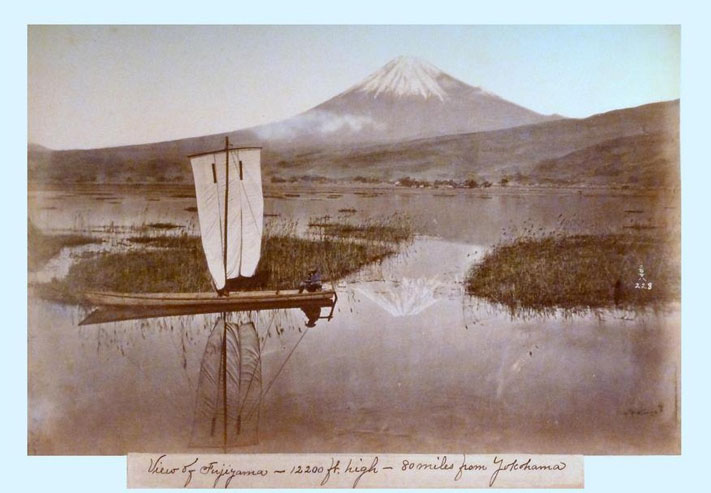

ประวัติ

ประวัติ
เชื่อว่ามีผู้ปีนภูเขาไฟฟูจิครั้งแรกเมื่อ พ.ศ. 1206 โดยนักบวชท่านหนึ่ง และในช่วงระหว่างนั้นจนถึงยุคเมจิ ภูเขาไฟฟูจิได้ชื่อว่าเป็นภูเขาศักดิ์สิทธิ์ซึ่งห้ามผู้หญิงขึ้น ปัจจุบันภูเขาไฟฟูจิเป็นสถานที่ท่องเที่ยวที่สำคัญและเป็นสัญลักษณ์อย่างหนึ่งของประเทศญี่ปุ่น ซึ่งจะเห็นได้จากในงานเขียนหรือภาพวาดต่างๆ โดยเฉพาะภาพวาดของโฮกูไซ ที่มีให้เห็นในวรรณกรรมและกาพย์กลอนที่สำคัญมากมายของญี่ปุ่น ในอดีตภูเขาไฟฟูจิเป็นที่ฝึกฝนของฐานทัพซามูไร ซึ่งในปัจจุบันฐานทัพหนึ่งของกองทหารญี่ปุ่น ตั้งอยู่บริเวณเชิงเขาภูเขาไฟฟูจิ
รูปแบบของภูเขาไฟฟูจิและกิจกรรมที่ต่อเนื่องยาวนานในการเป็นแรงบันดาลใจ ได้กลายเป็นวิถีปฏิบัติทางศาสนาที่เชื่อมโยงผู้คนที่นับถือศาสนาชินโต พุทธศาสนา และธรรมชาติเข้าด้วยกัน ภูเขาไฟฟูจิยังมีอิทธิพลต่อศิลปินในช่วงต้นคริสต์ศตวรรษที่ 19 ในการผลิตภาพเขียนที่มีลักษณะทางวัฒนธรรม ซึ่งทำให้ภูเขาไฟลูกนี้เป็นที่รู้จักไปทั่วโลก ทั้งนี้ภูเขาไฟฟูจิซึ่งมีความสูง 3,776 เมตร ตั้งอยู่ระหว่างจังหวัดยะมะนะชิและชิซุโอะกะ เป็นหนึ่งในทัศนียภาพที่สวยงามที่สุดแห่งหนึ่งของญี่ปุ่น จากการที่เป็นภูเขาไฟที่มีรูปร่างสมมาตรและมีหิมะปกคลุมบริเวณยอดเขาตลอดทั้งปี ทำให้กลายเป็นจุดดึงดูดผู้คนมานานหลายร้อยปี